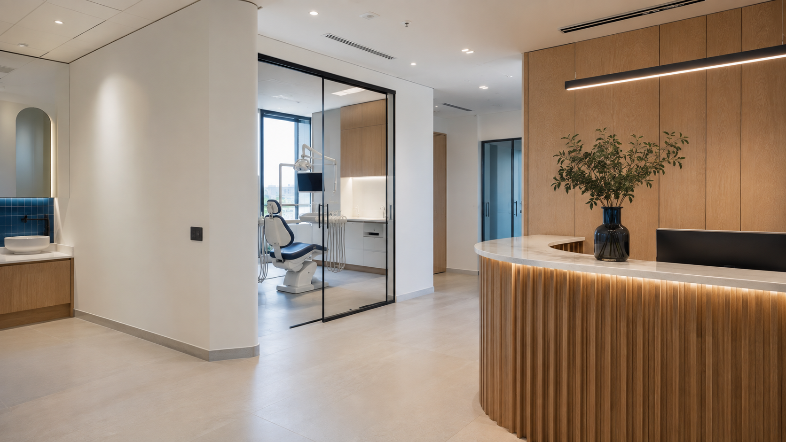
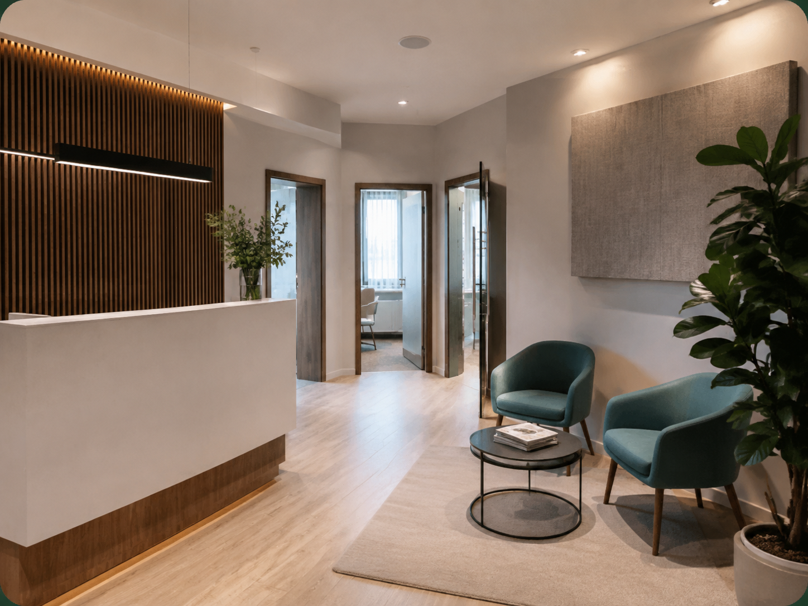
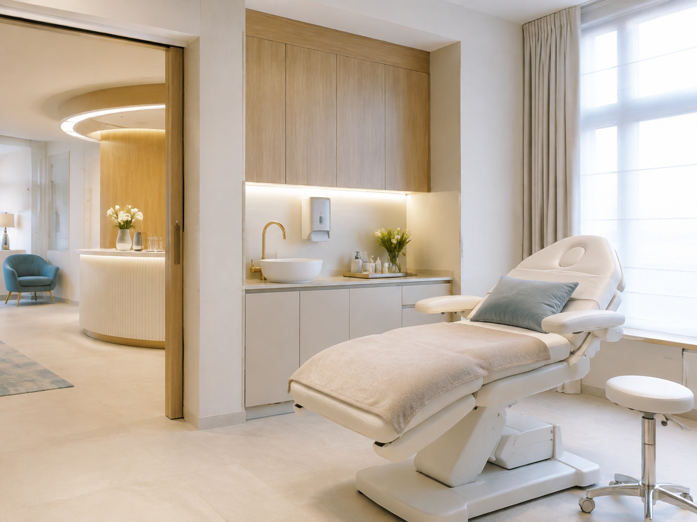
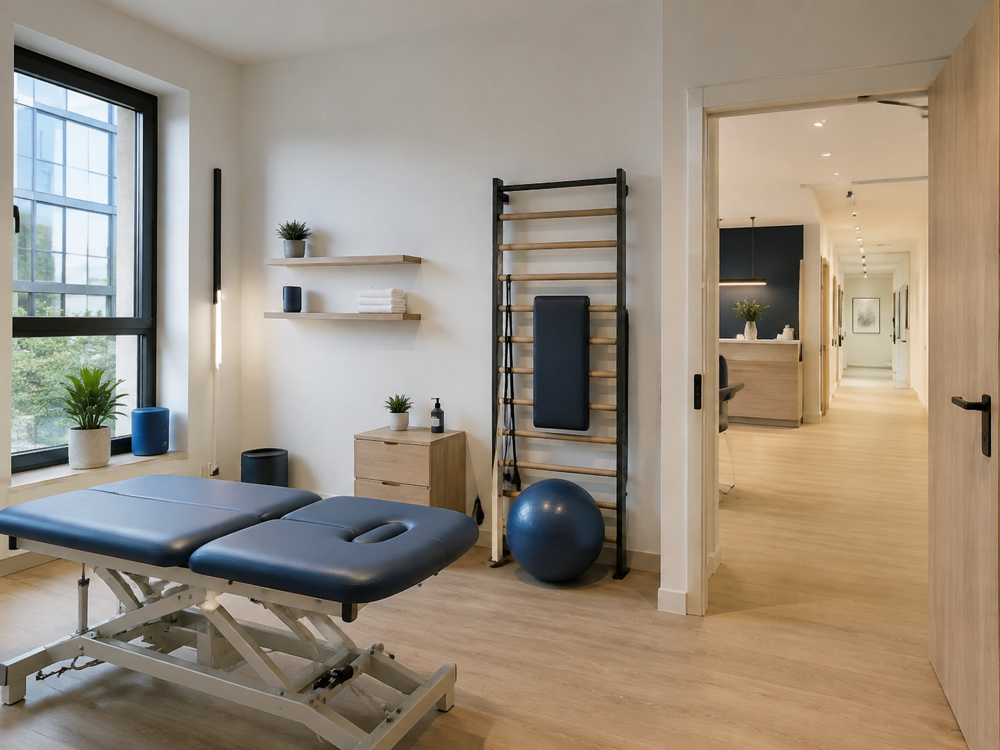
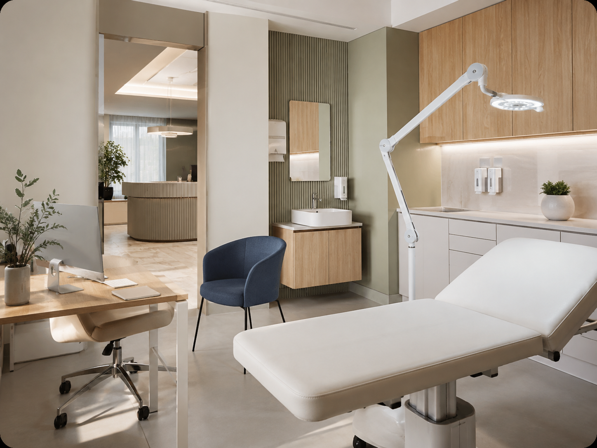

Techniczne możliwości lokalu
Weryfikujemy ukryte ograniczenia: wentylację, piony wod-kan, moc elektryczną, instalacje i możliwość montażu sprzętu. To właśnie tutaj doświadczenie pozwala uniknąć najdroższych niespodzianek.

LOKALE DLA BRANŻY MEDYCZNEJ
Stomatologia, gabinet medyczny lub medycyna estetyczna. Selekcja, weryfikacja i negocjacje w jednym procesie.
DOBRY ADRES TO DOPIERO POCZĄTEK
Oceniamy nie tylko lokalizację i cenę. Sprawdzamy, czy przestrzeń ma potencjał techniczny i funkcjonalny, a następnie pomagamy wynegocjować bezpieczne warunki.
MNIEJ RYZYKA. WIĘCEJ PEWNOŚCI.
Weryfikujemy ukryte ograniczenia: wentylację, piony wod-kan, moc elektryczną, instalacje i możliwość montażu sprzętu. To właśnie tutaj doświadczenie pozwala uniknąć najdroższych niespodzianek.
Dokumenty, potrzebne zgody i ograniczenia planowanych prac.
Czynsz, adaptacja, harmonogram oraz koszty przed otwarciem.
Wakacje czynszowe, nakłady, zgody i warunki zabezpieczające najemcę.
CO MOŻE CIĘ CZEKAĆ BEZ WERYFIKACJI
To tylko trzy przykłady spośród wielu ryzyk, które mogą pojawić się przy adaptacji lokalu. Warto sprawdzić je wcześniej — zanim zaczną biec czynsz i termin otwarcia.
Nowy, atrakcyjny lokal i uzgodniona wieloletnia umowa.
Projekt wymaga dodatkowej wentylacji, ale trasa prowadzi przez elewację, dach lub część wspólną.
Możliwości instalacyjne i stanowisko zarządcy sprawdzono dopiero po wyborze lokalu.
Zweryfikować dokumentację, trasę instalacji i potrzebne zgody przed podpisaniem umowy.
Metraż wygląda odpowiednio, a lokal sprawia wrażenie łatwego do adaptacji.
Sanitariat, wymagane przejścia i gabinety wymagają przesunięcia ścian oraz instalacji.
Program funkcjonalny powstał dopiero po zawarciu umowy.
Wykonać wstępny układ z projektantem i odrzucić lokal, jeśli nie ma bezpiecznego rozwiązania.
W projekcie jest miejsce na stanowisko i ergonomiczny gabinet.
Woda, odpływ, zasilanie i instalacje urządzeń są zbyt daleko lub trudne do wykonania.
Wymagania sprzętu i sposób organizacji zaplecza ustalono za późno.
Zestawić wymagania urządzeń i świadczeń z instalacjami lokalu jeszcze przed negocjacją końcowych warunków.
PROSTY PROCES
Profil działalności, lokalizacja, budżet i termin otwarcia.
Pokazujemy tylko przestrzenie zgodne z ustalonym briefem.
Koordynujemy analizę techniczną, funkcjonalną i formalną.
Dbamy o warunki, które wspierają bezpieczne przygotowanie lokalu.
DOŚWIADCZENIE, KTÓRE CHRONI BUDŻET
Łączymy znajomość rynku z koordynacją właściwych ekspertów. Dzięki temu wcześniej poznajesz ograniczenia lokalu i możesz świadomie porównać dostępne opcje.
Wymagania zależą od zakresu świadczeń. Zgodność projektu potwierdzają właściwi uprawnieni specjaliści i organy. Sprawdź podstawę prawną.
OPINIE KLIENTÓW
Treści robocze — do potwierdzenia przed publikacją.

„Dostaliśmy krótką listę lokali, które rzeczywiście pasowały do naszego modelu. Najważniejsze ryzyka techniczne poznaliśmy przed podpisaniem umowy.”
Anna K. · właścicielka gabinetu

„MazurEstate uporządkowało cały proces — od wymagań po negocjacje. Wiedzieliśmy, o co pytać i które zapisy umowy były dla nas kluczowe.”
Marek S. · współwłaściciel kliniki

„Zależało mi na reprezentacyjnym miejscu, ale bez kompromisów funkcjonalnych. Wybrany lokal spełnił oba cele i zmieścił się w zakładanym budżecie.”
Karolina M. · lekarka medycyny estetycznej

„Nie traciliśmy czasu na przypadkowe oferty. Każda prezentowana przestrzeń odpowiadała naszym kryteriom i planowi rozwoju placówki.”
Piotr W. · fizjoterapeuta

„Największą wartością była spokojna decyzja oparta na faktach. Otrzymaliśmy wsparcie przy analizie lokalu i rozmowach z właścicielem.”
Joanna L. · właścicielka praktyki
FAQ
Nie. Zależy to od rodzaju świadczeń, parametrów lokalu, instalacji i wymaganych zgód. Dlatego sprawdzamy przestrzeń przed podpisaniem umowy.
Tak — koordynujemy analizę i, gdy to potrzebne, współpracę z odpowiednimi projektantami oraz specjalistami.
Tak. Analizujemy m.in. czynsz, okres bezczynszowy, nakłady, zgody na prace i zabezpieczenia związane z adaptacją.
Najlepiej przed rozpoczęciem poszukiwań lub przed podpisaniem umowy na wybrany lokal.
Tak. Możemy rozpocząć od oceny konkretnej nieruchomości, zebrania pytań do właściciela oraz skoordynowania potrzebnej weryfikacji przed decyzją.
Tak. Zakres analizy i negocjacji dopasowujemy do rodzaju transakcji oraz planowanego sposobu prowadzenia działalności.
Zależy to od briefu, dostępności ofert i zakresu potrzebnych konsultacji. Na początku ustalamy etapy oraz realny harmonogram, ale nie obiecujemy terminu bez poznania projektu.
Zakres współpracy ustalamy indywidualnie. Jeśli potrzebna jest opinia projektanta lub innego specjalisty, jej koszt i termin potwierdzamy przed zleceniem.
ZANIM PODPISZESZ
Wstępna rozmowa pomoże określić brief lokalu, największe ryzyka i właściwy następny krok.